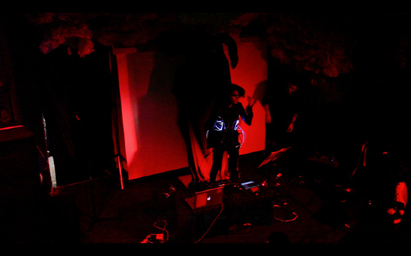

Gotham Project
2012
fashion technology
Group Project
Yoonjo Choi: Fashion Technology
Heesun Huh: Costume Design
Hiye Shin: Art Direction and Visual Effects
Ioni Gkliati: Compose and Performance
Sae Huh: Production
Gotham Project is an interactive performance consisted of 3 live projected screens, a new interface for musical expression, a tech friendly costume and a performer. My role was to build the soft circuit and implement it into the costume. The project aims to venture the future of live performance that encompasses multiple principles of performance art such as experimental theatre, interactive installation, new interfaces for musical expression and more.
Below is the costume designed for the performer.
Materials: LEDs, Light Tube, Conductive Thread/Fabric, Polymer Lithium Ion Battery
Software: Arduino
Demo video
Gotham Project's narrative explores and experiments the spirituality of internet: how human psychology goes through transformation and transfiguration as they enter the cyber space. Below is a documentation of the project performed at Glassland gallery and La Sala, Brooklyn, NY.
Performance video